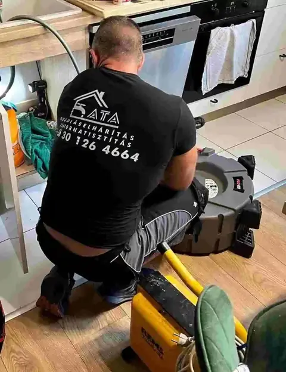
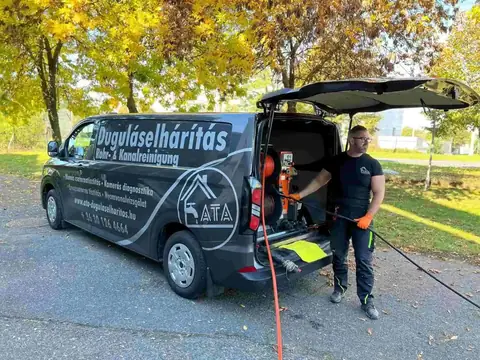
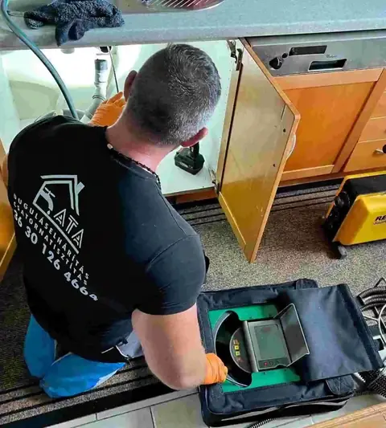
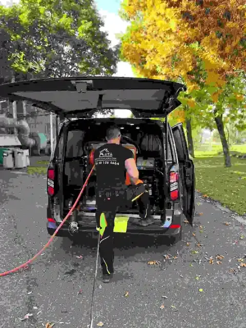
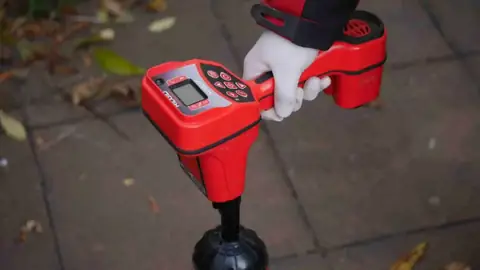

Duguláselhárítás
Csőgörénnyel, kamerával és magasnyomású mosóval, lakásban és ipari környezetben.
Részletek →Bontás nélkül, tisztán, garanciával. Non-Stop Győr-Moson-Sopron, Vas, Zala és Veszprém vármegyében.

Koppintson a problémára: megmutatom, mi okozhatja, és mit érdemes tenni, amíg odaérek.
A dugulások döntő többsége bontás nélkül megszüntethető. Ha a cső sérült, kamerával pontosan behatárolom a hibát, így nem kell az egész helyiséget feltörni.

Csőgörénnyel, kamerával és magasnyomású mosóval, lakásban és ipari környezetben.
Részletek →



„Nem fogok kókány, koszos munkát végezni. Az a célom, hogy a lefolyóját minél hamarabb újra használhassa.”
Magánszemélyeknek, társasházaknak, szövetkezeteknek és cégeknek dolgozom, 200-as és 400-as ipari csöveken is. Szorult helyzetben hívjon bizalommal.
„Gyors, precíz, tiszta munkavégzés.”
„Hétvégén is segített rajtunk, nagyon hálás vagyok.”
Győr-Moson-Sopron, Vas, Zala és Veszprém vármegye. Nem találja a települését? Hívjon, megmondom, mikor tudok odaérni.
A pontos kiszállási idő a távolságtól és az aznapi munkáktól függ, ezt telefonon mindig őszintén megmondom.
A várható költséget a munka megkezdése előtt megbeszéljük. Lakossági ügyfélnek kiszállási díjat nem számolok fel. Árak részletesen →
Sürgős esetben általában 30-60 percen belül. Ha nem kell azonnal beavatkozni, igyekszem még aznap elhárítani a dugulást.
Lakossági ügyfélnek nincs, ha a duguláselhárítást velem végezteti.
A dugulások döntő többsége igen. Ha a cső sérült, kamerával pontosan behatárolom a hiba helyét, így csak ott kell bontani, ahol muszáj.
A munka előtt letakarom a területet, a végén fertőtlenítek. Tisztán hagyom ott a helyiséget.
Igen, az elvégzett duguláselhárításra garanciát vállalok. Nem érvényes, ha a visszadugulást törlőkendő vagy más, csatornába nem való anyag okozza, illetve ha a vezeték szerkezeti hibája (pl. negatív lejtés, törött cső) áll a háttérben.
Ha a lakásbiztosítása tartalmazza a duguláselhárítást, a számlámat benyújthatja a biztosítónak.